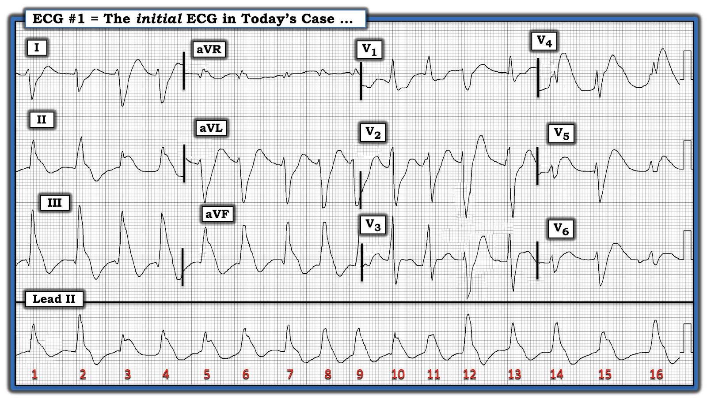
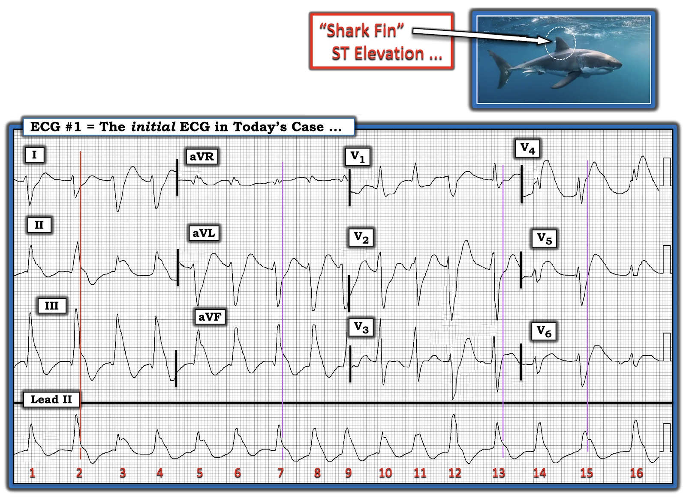

ECG Blog #364 — VT cần sốc điện chuyển nhịp?
Điện tâm đồ trong Hình 1 được ghi từ một người đàn ông khoảng 60 tuổi khi đến ED (khoa cấp cứu — Emergency Department). Lý do đến khám là đau ngực — và bệnh nhân trụy gục ngay sau khi đến ED.
CÂU HỎI:
Một bác sĩ tim mạch đã đọc nhịp trong Hình 1 là VT (nhịp nhanh thất).
- BẠN có đồng ý với bác sĩ tim mạch này không?


SUY NGHĨ CỦA TÔI về điện tâm đồ trong Hình 1:
Có một số lý do khiến điện tâm đồ trong Hình 1 khó diễn giải:
- Nhịp nhanh — và QRS trông rất rộng. Không chỉ QRS giãn rộng — hình dạng các phức bộ QRS còn thay đổi từ nhát này sang nhát kế tiếp (Thấy rõ nhất ở dải nhịp chuyển đạo II dài ở cuối bản ghi).
- Nhịp trông khá đều — và không có hoạt động nhĩ. Dấu hiệu một nhịp nhanh QRS rộng khá đều không có dấu hiệu rõ ràng của hoạt động nhĩ (đặc biệt khi gặp ở bệnh nhân có triệu chứng cấp) — phải lập tức gợi ý chẩn đoán VT cho đến khi chứng minh được điều ngược lại.
Phản bác Chẩn đoán ban đầu nêu trên:
Ban đầu tôi nghĩ nhịp trên điện tâm đồ #1 nhiều khả năng là VT. Dù vậy — tôi đã đổi ý sau khi nhìn kỹ hơn vì các dấu hiệu sau:
- Nhịp trên dải nhịp chuyển đạo II dài không đều. Thay vào đó, quan sát kỹ cho thấy khoảng R-R có thay đổi nhẹ nhưng thật sự từ 1 nhát sang nhát kế tiếp.
- Tần số chung của nhịp trong Hình 1 là nhanh (tức là có lẽ ~110-115/phút) — nhưng không nhanh bằng mức thường gặp ở một VT có ý nghĩa về huyết động (hầu như luôn ít nhất là 130/phút).
- Dường như có ST chênh lên “vây cá mập” (shark fin) ở các nhát #3,4,5,6 trên các chuyển đạo dưới — và ở các nhát #8,9,10,11 và #15,16 trên dải nhịp chuyển đạo II dài.
- Có ST chênh xuống “vây cá mập” ở các chuyển đạo I, aVL và V2.
- Tổng Hợp Các Dấu Hiệu điện tâm đồ: Tôi đã mô tả một nhịp không đều hoàn toàn không có sóng P — với tần số chung ~110/115/phút. Các dấu hiệu này gợi ý rằng thay vì VT — nhịp trong Hình 1 là AFib (rung nhĩ) với đáp ứng thất khá nhanh.
- Điều này buộc chúng ta phải giải thích tại sao QRS lại rộng. Vì nhịp là nhịp trên thất (tức là AFib) — chúng ta có thể đánh giá chính xác hình thái QRS. Sóng R dương ở chuyển đạo V1 — cùng với sóng S tận rộng ở các chuyển đạo bên I và V6 — phù hợp với RBBB (blốc nhánh phải — Right Bundle Branch Block). QRS âm là chủ yếu ở chuyển đạo I — cùng với dương là chủ yếu ở các chuyển đạo dưới gợi ý LPHB (blốc phân nhánh trái sau — Left Posterior HemiBlock). Như vậy, dường như có blốc hai phân nhánh (tức là RBBB/LPHB).
- Dù vậy — một phần đáng kể của sự giãn rộng QRS mà chúng ta thấy trong Hình 1 có lẽ là do đoạn ST lệch (chênh lên và chênh xuống) kiểu “vây cá mập”. Xét vị trí ST chênh lên (tức là ở các chuyển đạo dưới — và ở V4,5,6) — và vị trí ST chênh xuống (tức là ở các chuyển đạo I,aVL; V1,V2) — bức tranh điện tâm đồ này gợi ý một STEMI dưới-sau-bên cấp đang diễn tiến.
Hình thái Vây Cá Mập là gì?
Điều quan trọng là cần biết hình ảnh đoạn ST chênh lên "vây cá mập" — trong đó phức bộ QRS trông rộng, vì nó hòa lẫn vào các đoạn ST chênh lên cực độ ở nhiều chuyển đạo. Hệ quả là — ranh giới giữa điểm kết thúc của phức bộ QRS và đoạn ST trở nên không thể phân biệt ở những chuyển đạo có ST chênh lên hoặc chênh xuống rõ rệt.
- Đoạn ST chênh lên "vây cá mập" thường gặp nhất là dấu hiệu của thiếu máu cục bộ xuyên thành nặng do tắc cấp động mạch vành. Cần cân nhắc thông tim sớm để làm rõ giải phẫu — vì trong nhiều (đa số) trường hợp, tiên lượng nhiều khả năng xấu trừ khi được tái tưới máu kịp thời. (Để biết thêm về ST chênh lên "vây cá mập" — Xem Audio Pearl trong PHẦN BỔ SUNG bên dưới — cũng như ECG Blog #265 với ví dụ một ca có ST chênh lên "vây cá mập" còn ngoạn mục hơn).
- ĐIỂM THEN CHỐT (PEARL) #1: MẤU CHỐT để xác nhận rằng hình thái "vây cá mập" là nguyên nhân gây ra bức tranh điện tâm đồ nổi bật này — là tìm 1 hoặc 2 chuyển đạo mà ở đó bạn có thể xác định rõ giới hạn (điểm kết thúc) của phức bộ QRS. Các chuyển đạo hữu ích nhất để làm việc này trong ca hôm nay là chuyển đạo II và III — trong Hình 2, tôi đã vẽ một đường ĐỎ song song với đường kẻ đậm của lưới điện tâm đồ ở các chuyển đạo I,II,III ghi đồng thời. Lưu ý rằng tôi đã kéo dài đường này xuống tới phức bộ tương ứng trên dải nhịp chuyển đạo II dài ở cuối bản ghi.
- Lý do kéo dài đường ĐỎ xuống tận nhát tương ứng trên dải nhịp chuyển đạo II dài — là vì điều này cho bạn biết ở đâu phức bộ QRS kết thúc và đoạn ST bắt đầu trên dải nhịp chuyển đạo II dài.
- Biết được mốc này cho các phức bộ trên dải nhịp chuyển đạo II dài — cho phép chúng ta vẽ và kéo dài lên trên các đường TÍM song song với đường kẻ đậm của lưới điện tâm đồ ở 3 nhóm chuyển đạo ghi đồng thời còn lại (các đường TÍM trong Hình 2).
- KẾT LUẬN: Điện tâm đồ trong Hình 2 cho thấy AFib với đáp ứng thất khá nhanh kèm ST chênh lên "vây cá mập" rõ nhất ở một số phức bộ trên các chuyển đạo dưới. ST chênh xuống "vây cá mập" soi gương thấy ở một số phức bộ tại các chuyển đạo I và aVL — và ST chênh xuống chỉ điểm nhồi máu thành sau thấy ở chuyển đạo V2.


DIỄN TIẾN CỦA CA BỆNH:
Như đã nêu khi trình bày ca hôm nay — bệnh nhân này đến viện vì đau ngực, rồi trụy gục ngay sau khi ghi điện tâm đồ trong Hình 1. Hồi sinh tim phổi được tiến hành ngay — nhưng không thành công.
- Với tần số AFib nhanh — blốc hai phân nhánh mới xuất hiện ( = RBBB/LPHB) — và STEMI cấp diện rộng rõ ràng — thật đáng tiếc nhưng không đáng ngạc nhiên khi bệnh nhân này không thể hồi sinh được.
- Do không có tiền sử trước đó — tôi không biết AFib trên điện tâm đồ #1 có phải (hay không phải) là một dấu hiệu mới. Nếu đây là dấu hiệu mới — thì điều quan trọng là cần biết ý nghĩa tiên lượng xấu của AFib mới xuất hiện đi kèm nhồi máu cơ tim (MI) cấp.
- ĐIỂM THEN CHỐT CUỐI CÙNG (PEARL): Theo kinh nghiệm của tôi — không thường gặp trường hợp AFib mới phải sốc điện chuyển nhịp khẩn cấp tại ED. Dù vậy — ca hôm nay là một ngoại lệ của quy luật chung này, ở chỗ bệnh nhân có triệu chứng (tức là đau ngực mới xuất hiện) — tần số AFib tương đối nhanh (gần như mọi khoảng R-R đều nằm trong khoảng 2-3 ô lớn — do đó tần số tim chung rõ ràng trên 100/phút) — và — điện tâm đồ ban đầu cho thấy blốc hai phân nhánh kèm STEMI diện rộng đang diễn tiến. Ngay cả khi ban đầu nhân viên y tế nghĩ nhịp này là VT — sốc điện chuyển nhịp đồng bộ kịp thời có thể vẫn là điều trị được lựa chọn cho rối loạn nhịp hôm nay, xét tình trạng mất ổn định của bệnh nhân trong bối cảnh lâm sàng này.
==========================================
Lời cảm ơn: Xin cảm ơn 黄建成 và 罗莉莲 (ở Malaysia) đã chia sẻ ca bệnh và bản ghi này.
==========================================

=====================================
PHẦN BỔ SUNG (2/19/2023):
- Pearl Audio dưới đây trình bày khái niệm ST chênh lên "vây cá mập" .

ECG Media PEARL #73 (5:40 phút Audio) — Trình bày khái niệm ST chênh lên và chênh xuống "vây cá mập" như một dấu hiệu của nhồi máu cấp diện rộng.
==============================
Các bài ECG Blog liên quan khác đến ca hôm nay:
- ECG Blog #185 — Trình bày Hệ thống Đọc Nhịp của tôi, theo cách tiếp cận Ps, Qs & 3R.
- ECG Blog #265 — Trình bày một ca ST chênh lên “vây cá mập” (Shark-Fin).